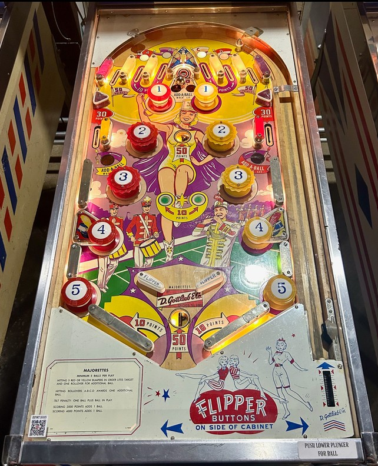

All passive and pop bumpers score 10 points. The red bumpers on the left half of the table are numbered 1-5 from top to bottom, and the yellow bumpers on the right half of the table are numbered the same way. Only the 2 and 3 in each 1-5 set are pop bumpers, while the others are passive bumpers. Hit bumpers in 1-2-3-4-5 order to light them. Lighting all of the red 1-2-3-4-5 bumpers will light an extra ball at the top standup target and the upper right side lane. Lighting all of the yellow 1-2-3-4-5 bumpers will light an extra ball at the top standup target and upper left side lane. Collecting a red or yellow extra ball resets the 1-2-3-4-5 sequence for that colour. Progress on the bumper sequences is preserved from ball to ball. The top standup target also always scores 100 points, and the upper side lanes also always score 30 points.
There are 6 top lanes, separated as 3 on each side. The lanes closest to the edges of the table score 50 points. The other four lanes score 10 points each and are lit with A, B, C, and D. Making a lit lane unlights it. Unlighting all 4 top lanes awards 1 extra ball and relights some, but not all, of the top lanes. The A will always relight, and the C never will; the B and D lanes will relight if and only if the red 3 and yellow 3 bumpers respectively are also lit. This means that if you collect a top lanes extra ball while being close to a red or yellow extra ball, the next top lanes extra ball will be slightly harder to reach.
The flippers are in open space with no in/out lanes, posts, or slingshots nearby. Below the flippers are large wall rubbers which can be used, with liberal nudging, to bounce the ball into a saucer located just below the flippers. The saucer scores 50 points and pops the ball upward between the flippers and slightly to the right, where it should fall to the right flipper. There is a second saucer located most of the way up the playfield between the #2 bumpers, which also scores 50 points and pops the ball up into the top standup target.
There is no end of ball bonus. Tilt ends the ball in play and subtracts one additional ball. Multiple extra balls can be earned per ball in play, up to a maximum of 10 balls remaining in the game at any one time.
The below picture of Majorettes' playfield was taken from Pinside, where it is image #3890708.
